ฟีเจอร์ผู้ดูแลโปรเจกต์#
ผู้ดูแลโปรเจกต์ คือผู้ใช้ที่ได้รับสิทธิ์การดูแลระบบสำหรับโปรเจกต์เฉพาะ ผู้ดูแลโปรเจกต์สามารถดูผู้ใช้ที่อยู่ในโปรเจกต์ที่ตนดูแล จัดการเซสชันการคำนวณและการปรับใช้โมเดล รวมถึงดูแลโฟลเดอร์จัดเก็บของโปรเจกต์ได้ โดยไม่ต้องมีสิทธิ์ผู้ดูแลระบบระดับสูงทั่วทั้งระบบ
การระบุโปรเจกต์ที่คุณเป็นผู้ดูแล#
เมื่อคุณเปิดดรอปดาวน์โปรเจกต์ในส่วนหัว โปรเจกต์ที่คุณมีบทบาทผู้ดูแลโปรเจกต์จะมีตราสัญลักษณ์รูปโล่ปรากฏข้างชื่อโปรเจกต์ การวางเคอร์เซอร์เหนือตราสัญลักษณ์จะแสดงคำแนะนำ ผู้ดูแลโปรเจกต์ ซึ่งยืนยันว่าการเลือกโปรเจกต์นี้จะเปิดเผยรายการในแถบด้านข้างสำหรับผู้ดูแลโปรเจกต์ตามที่อธิบายไว้ด้านล่าง
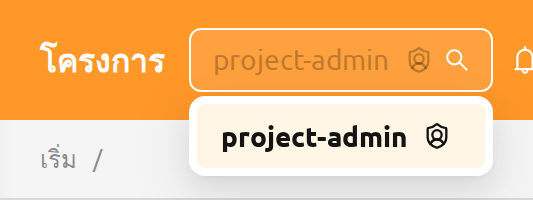
การสลับไปยังโปรเจกต์อื่นจากตัวเลือกโปรเจกต์ในส่วนหัวจะประเมินบทบาทของผู้ใช้ใหม่ ผู้ใช้คนเดียวกันอาจทำหน้าที่เป็นผู้ดูแลโปรเจกต์ในโปรเจกต์หนึ่งและเป็นผู้ใช้ทั่วไปในอีกโปรเจกต์หนึ่งภายในเซสชันการเข้าสู่ระบบเดียวกันได้ สำหรับวิธีการมอบและเพิกถอนบทบาทผู้ดูแลโปรเจกต์ ดูที่ส่วนการมอบสิทธิ์ผู้ดูแลโปรเจกต์ในบทการจัดการ RBAC
เนื่องจากสิทธิ์ผู้ดูแลโปรเจกต์จะถูกประเมินใหม่ตามโปรเจกต์ที่เลือก หน้าที่คุณสามารถใช้ได้จึงอาจแตกต่างกันไปในแต่ละโปรเจกต์ หากคุณเปิด URL หรือเลือกโปรเจกต์ที่คุณไม่มีสิทธิ์เข้าถึง จะมีหน้า การเข้าถึงที่ไม่ได้รับอนุญาต แสดงขึ้นพร้อมปุ่มที่พาคุณกลับไปยังหน้าแรกที่คุณสามารถใช้ได้
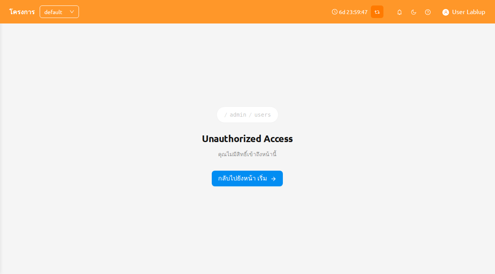
ตั้งค่าผู้ดูแลโปรเจกต์#
ผู้ดูแลระบบระดับสูงสามารถมอบและเพิกถอนสิทธิ์ผู้ดูแลโปรเจกต์ให้กับผู้ใช้หนึ่งคนหรือมากกว่าได้ในที่เดียวผ่านโมดอล ตั้งค่าผู้ดูแลโปรเจกต์ ซึ่งเปิดจากหน้าผู้ดูแลโปรเจกต์ (ผู้ใช้ → โปรเจกต์)
ในแต่ละแถวโปรเจกต์ คลิกปุ่ม ตั้งค่าผู้ดูแลโปรเจกต์ เพื่อเปิดโมดอล
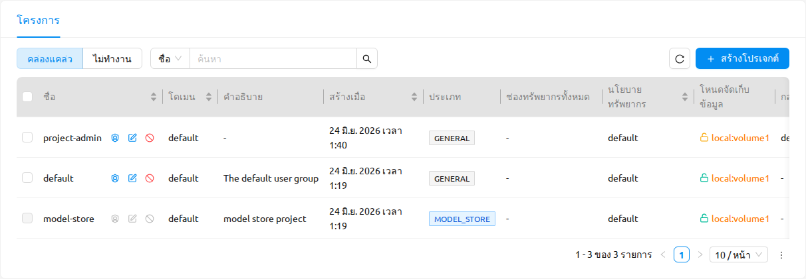
การดำเนินการ ตั้งค่าผู้ดูแลโปรเจกต์ พร้อมใช้งานสำหรับผู้ดูแลระบบระดับสูงบนตัวจัดการเวอร์ชัน 26.8.0 ขึ้นไป จะถูกซ่อนไว้บนตัวจัดการเวอร์ชันเก่ากว่านี้ และถูกปิดใช้งานสำหรับโปรเจกต์คลังโมเดล
โมดอลนี้มีสิ่งต่อไปนี้:
- ตัวเลือกผู้ใช้และปุ่มเพิ่ม: ตัวเลือกแบบหลายรายการเพื่อเลือกผู้ใช้หนึ่งคนหรือมากกว่า และปุ่ม เพิ่ม เพื่อมอบสิทธิ์ผู้ดูแลโปรเจกต์ให้กับพวกเขาสำหรับโปรเจกต์ปัจจุบัน
- ตารางผู้ดูแลปัจจุบัน: รายการผู้ดูแลปัจจุบันของโปรเจกต์ โดยแต่ละรายการมีการดำเนินการ เพิกถอนสิทธิ์ผู้ดูแลระบบ (X) เพื่อนำสิทธิ์ผู้ดูแลโปรเจกต์ของผู้ใช้นั้นออก
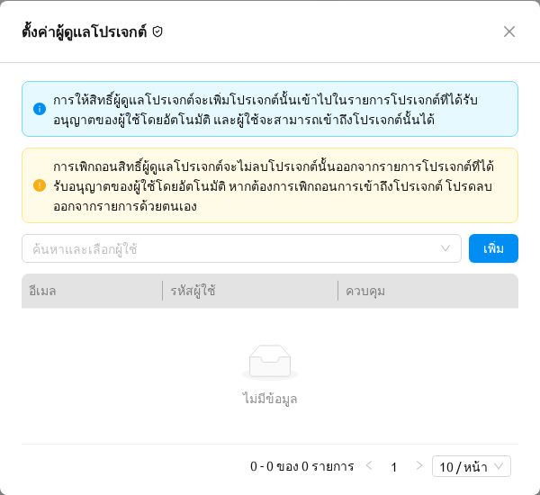
โมดอลจะแสดงการแจ้งเตือนสองรายการที่คุณควรอ่านก่อนมอบหมายหรือเพิกถอน:
- ข้อมูล: การให้สิทธิ์ผู้ดูแลโปรเจกต์จะเพิ่มโปรเจกต์นั้นเข้าไปในรายการโปรเจกต์ที่ได้รับอนุญาตของผู้ใช้โดยอัตโนมัติ ดังนั้นผู้ใช้จึงสามารถเข้าถึงโปรเจกต์นั้นได้
- คำเตือน: การเพิกถอนสิทธิ์ผู้ดูแลโปรเจกต์จะไม่ลบโปรเจกต์นั้นออกจากรายการโปรเจกต์ที่ได้รับอนุญาตของผู้ใช้โดยอัตโนมัติ หากต้องการบล็อกการเข้าถึงโปรเจกต์ โปรดลบออกจากรายการด้วยตนเอง
ถัดจากชื่อโมดอล ไอคอน ดูสิทธิ์ RBAC จะเปิดหน้าการจัดการ RBAC โดยที่บทบาท role_project_<project_id>_admin ของโปรเจกต์ถูกกรองไว้ล่วงหน้าและแผงรายละเอียดเปิดอยู่ เพื่อให้คุณตรวจสอบบทบาทพื้นฐานได้ สำหรับข้อมูลเพิ่มเติมเกี่ยวกับบทบาทนั้น ดูที่การมอบสิทธิ์ผู้ดูแลโปรเจกต์ในบทการจัดการ RBAC
เมื่อคุณเพิ่มผู้ใช้หลายคนพร้อมกัน ผู้ใช้ที่ล้มเหลวจะแสดงผ่านการแจ้งเตือนข้อผิดพลาดที่มีจำนวนผู้ใช้ที่ไม่สามารถมอบหมายได้ ส่วนผู้ใช้ที่สำเร็จจะยังคงได้รับสิทธิ์
แถบด้านข้างของผู้ดูแลโปรเจกต์#
เมื่อคุณเลือกโปรเจกต์ที่คุณเป็นผู้ดูแลโปรเจกต์ ส่วน การดำเนินงาน ของแถบด้านข้างจะแสดงรายการสี่รายการที่อุทิศให้กับการจัดการโปรเจกต์นั้น:
- ผู้ใช้ — สมาชิกของโปรเจกต์ปัจจุบัน
- ข้อมูล — โฟลเดอร์จัดเก็บที่โปรเจกต์ปัจจุบันเป็นเจ้าของ
- เซสชัน — เซสชันการคำนวณที่ผู้ใช้ในโปรเจกต์ปัจจุบันเป็นเจ้าของ
- การปรับใช้ — การปรับใช้โมเดลที่โปรเจกต์ปัจจุบันเป็นเจ้าของ
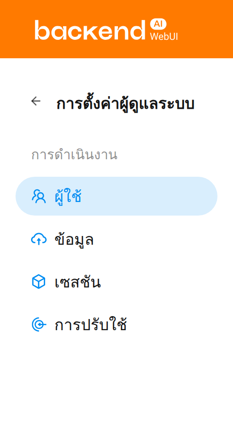
ในหน้าผู้ดูแลโปรเจกต์ จะแสดงเฉพาะรายการภายใต้โปรเจกต์ที่เลือกด้วยตัวเลือกโปรเจกต์ที่ด้านบนเท่านั้น คุณสามารถตรวจสอบเนื้อหานี้ได้จากแบนเนอร์ที่ด้านบนของหน้า
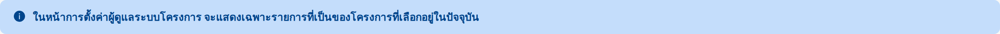
การรีเฟรชหน้าผู้ดูแลโปรเจกต์#
หน้าผู้ดูแลโปรเจกต์มีปุ่มรีเฟรชแบบเดียวกัน คลิกปุ่มรีเฟรชเพื่อรีเฟรชรายการในตาราง
ปุ่มดรอปดาวน์ที่อยู่ข้างปุ่มรีเฟรชจะเปิดเมนู รีเฟรชอัตโนมัติ ซึ่งคุณสามารถเลือกช่วงเวลาการรีเฟรชอัตโนมัติได้
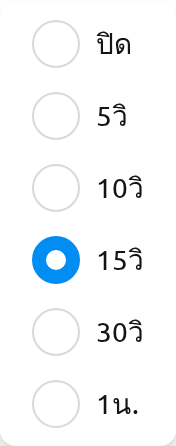
ผู้ใช้#
หน้า ผู้ใช้ แสดงผู้ใช้ทุกคนที่เป็นสมาชิกของโปรเจกต์ที่เลือกอยู่ในปัจจุบัน ใช้หน้านี้เพื่อตรวจสอบสมาชิกในโปรเจกต์ได้อย่างรวดเร็ว ตัวอย่างเช่น เพื่อยืนยันว่าใครมีสิทธิ์เข้าถึงทรัพยากรของโปรเจกต์ หรือเพื่อระบุบัญชีที่ไม่ได้ใช้งาน
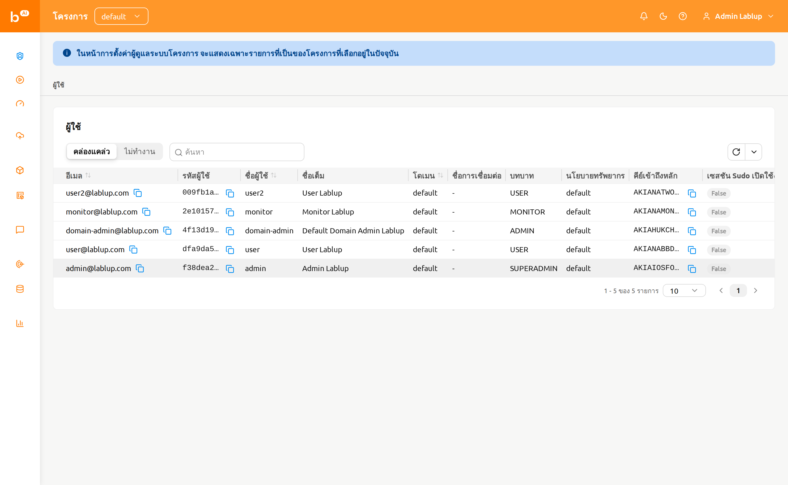
หน้านี้มีตัวควบคุมต่อไปนี้:
- ตัวควบคุมแบบแบ่งส่วน ใช้งานอยู่ / ไม่ได้ใช้งาน: สลับระหว่างผู้ใช้ที่ใช้งานอยู่และไม่ได้ใช้งาน โดยค่าเริ่มต้นจะเลือกใช้งานอยู่
- ตัวกรองคุณสมบัติ: กรองรายการตาม E-Mail, ID, ชื่อผู้ใช้, บทบาท หรือวันที่สร้าง
สำหรับผู้ดูแลโปรเจกต์ หน้าผู้ใช้เป็นแบบอ่านอย่างเดียว ไม่มีการดำเนินการสร้าง แก้ไข หรือปิดการใช้งานในหน้านี้ การดำเนินการเหล่านั้นสงวนไว้สำหรับผู้ดูแลระบบระดับสูงผ่านหน้าผู้ใช้ทั่วทั้งระบบในบทฟีเจอร์ผู้ดูแลระบบ
ข้อมูล#
หน้า ข้อมูล แสดงโฟลเดอร์จัดเก็บ (vfolder) ที่โปรเจกต์ที่เลือกอยู่ในปัจจุบันเป็นเจ้าของ ใช้หน้านี้เพื่อสร้างโฟลเดอร์ที่แชร์ในโปรเจกต์ คืนค่าโฟลเดอร์ที่ถูกลบโดยไม่ตั้งใจ หรือล้างโฟลเดอร์ที่ไม่จำเป็นต้องเก็บไว้อีกต่อไปอย่างถาวร
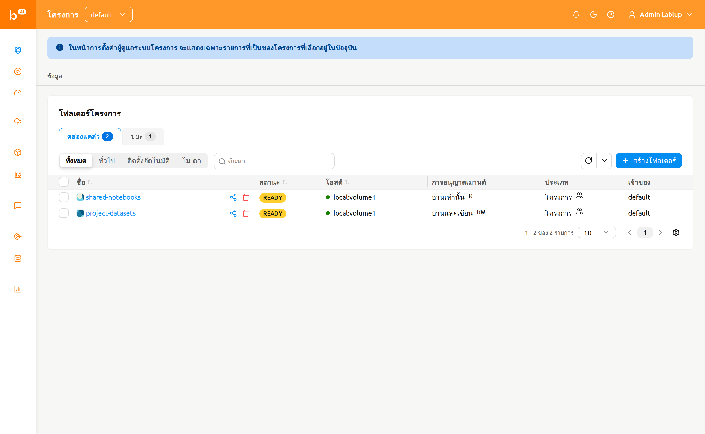
หน้านี้มีตัวควบคุมต่อไปนี้:
แท็บ ใช้งานอยู่ / ขยะ: สลับระหว่างโฟลเดอร์ที่ใช้งานอยู่และโฟลเดอร์ที่ถูกลบแบบนุ่ม แต่ละแท็บจะแสดงตราจำนวนที่บอกจำนวนโฟลเดอร์ที่อยู่ในแท็บนั้น
ตัวกรองโหมด: กรองตามโหมดการใช้งานของโฟลเดอร์ — ทั้งหมด, ทั่วไป, โฟลเดอร์ไปป์ไลน์, ติดตั้งอัตโนมัติ, โมเดล
ตัวเลือก โฟลเดอร์ไปป์ไลน์ และ โมเดล จะปรากฏเฉพาะเมื่อมีการเปิดใช้งานฟีเจอร์ที่เกี่ยวข้องในการปรับใช้เท่านั้น — โฟลเดอร์ไปป์ไลน์ ต้องเปิดใช้งานปลายทางไปป์ไลน์ FastTrack และ โมเดล ต้องเปิดใช้งานโฟลเดอร์โมเดล
ตัวกรองคุณสมบัติ: กรองรายการโดยใช้ตัวกรองคุณสมบัติโฟลเดอร์จัดเก็บมาตรฐาน
การสร้างโฟลเดอร์#
ในการสร้างโฟลเดอร์ใหม่จากหน้านี้:
- คลิกปุ่ม สร้างโฟลเดอร์ ที่มุมขวาบนของหน้า
- กรอกข้อมูลโฟลเดอร์ในโมดอลการสร้าง
- คลิก สร้าง เพื่อสร้างโฟลเดอร์
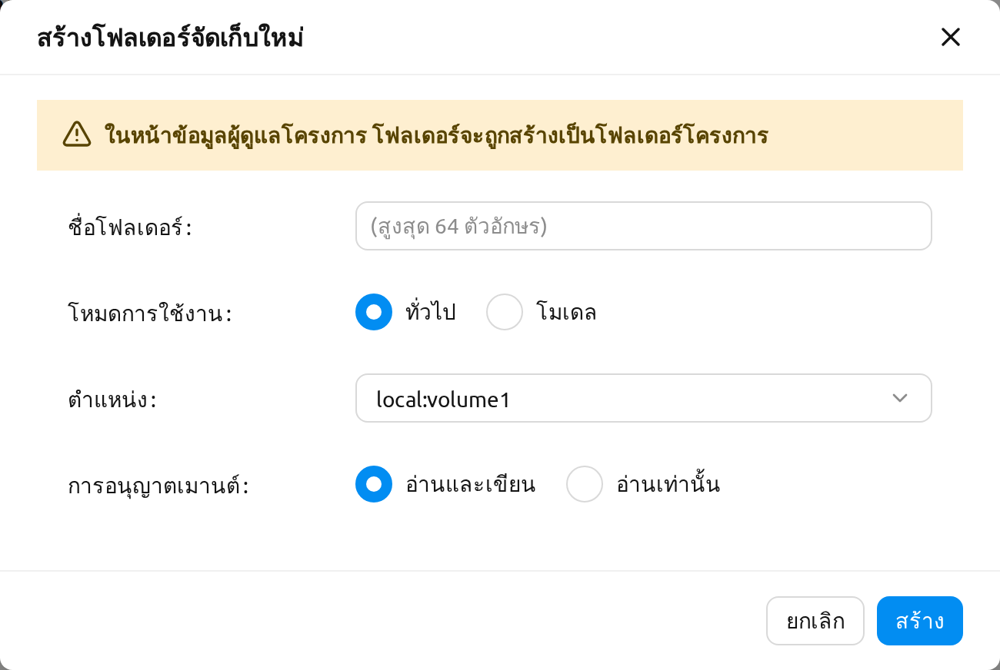
โฟลเดอร์ที่สร้างจากหน้าข้อมูลของผู้ดูแลโปรเจกต์จะเป็นโฟลเดอร์โปรเจกต์เสมอ โมดอลการสร้างไม่มีตัวเลือกประเภทโฟลเดอร์ และจะแสดงข้อความต่อไปนี้เพื่อระบุสิ่งนี้อย่างชัดเจน:
ในหน้าข้อมูลผู้ดูแลโครงการ โฟลเดอร์จะถูกสร้างเป็นโฟลเดอร์โครงการ
สำหรับรายละเอียดเกี่ยวกับโหมดการใช้งานโฟลเดอร์, สิทธิ์ และโควต้า ดูที่บทโฟลเดอร์จัดเก็บ
การคืนค่าหรือลบโฟลเดอร์อย่างถาวร#
สลับไปยังแท็บ ขยะ เพื่อดูโฟลเดอร์ที่ถูกลบแบบนุ่ม เลือกโฟลเดอร์หนึ่งรายการหรือมากกว่าโดยใช้ช่องทำเครื่องหมายในแถว จากนั้นใช้ปุ่มการดำเนินการในส่วนหัวที่ปรากฏข้างจำนวนที่เลือก:
- คืนค่า: ย้ายโฟลเดอร์ที่เลือกกลับไปยังแท็บใช้งานอยู่
- ลบถาวร: ล้างโฟลเดอร์ที่เลือกอย่างถาวร การดำเนินการนี้ไม่สามารถยกเลิกได้ และต้องการให้คุณพิมพ์ชื่อโฟลเดอร์เพื่อยืนยัน
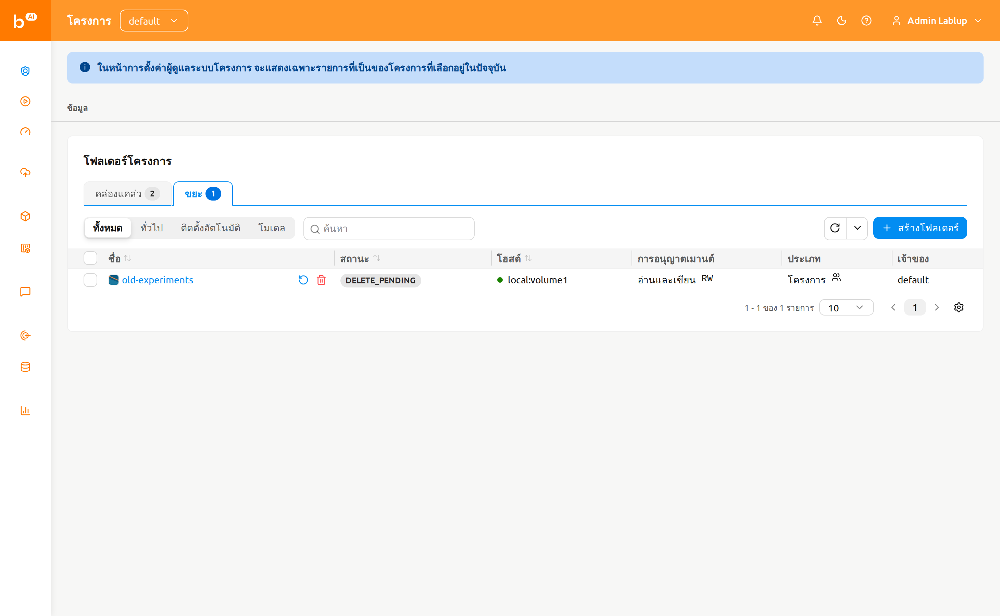
การลบโฟลเดอร์จัดเก็บอย่างถาวรจะลบเนื้อหาทั้งหมดและไม่สามารถยกเลิกได้ โมดอลยืนยันต้องการให้คุณพิมพ์ชื่อโฟลเดอร์ก่อนที่ปุ่มลบจะใช้งานได้
เซสชัน#
หน้า เซสชัน แสดงเซสชันการคำนวณที่ผู้ใช้ในโปรเจกต์ที่เลือกอยู่ในปัจจุบันเป็นเจ้าของ ใช้หน้านี้เพื่อเฝ้าติดตามภาระงานที่ใช้งานอยู่ ระบุเซสชันที่ทำงานเป็นเวลานาน หรือยุติเซสชันที่ไม่จำเป็นอีกต่อไป
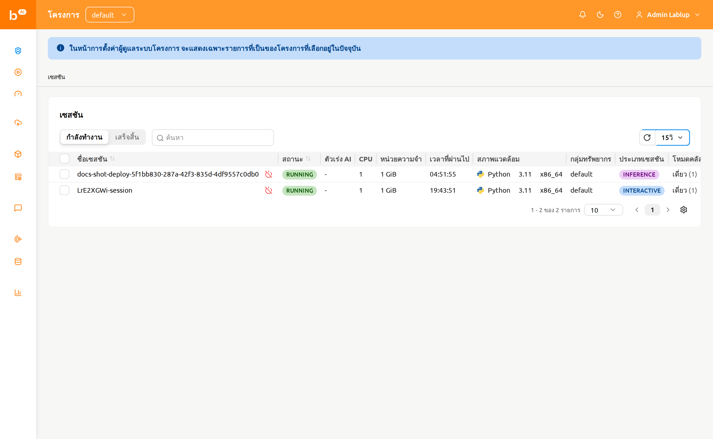
หน้านี้มีตัวควบคุมต่อไปนี้:
- ตัวควบคุมแบบแบ่งส่วน กำลังทำงาน / สิ้นสุดแล้ว: สลับระหว่างเซสชันที่กำลังทำงานในปัจจุบันและเซสชันที่สิ้นสุดแล้ว
- ตัวกรองคุณสมบัติและการจัดเรียง: กรองรายการตาม ID, ชื่อเซสชัน หรือ UUID ของเจ้าของ คลิกที่ส่วนหัวคอลัมน์ที่สามารถจัดเรียงได้เพื่อจัดเรียงตาราง
การยุติเซสชัน#
ในการยุติเซสชันหนึ่งหรือหลายเซสชัน:
- เลือกเซสชันที่ต้องการยุติโดยใช้ช่องทำเครื่องหมายในคอลัมน์ซ้ายสุด หากต้องการยุติเซสชันเดียว คุณสามารถใช้ปุ่ม ยุติ ที่อยู่ข้างชื่อเซสชันได้
- คลิกไอคอนปิดเครื่องในส่วนหัวของตารางเพื่อเปิดโมดอลยืนยัน
- ตรวจสอบรายการเซสชันเป้าหมายในโมดอล
- หากต้องการ ให้เลือกช่องทำเครื่องหมาย บังคับยุติ เพื่อยุติหรือยกเลิกเซสชันโดยไม่คำนึงถึงสถานะปัจจุบัน การเปิดใช้งานตัวเลือกนี้จะแสดงคำเตือนและเปลี่ยนป้ายกำกับปุ่มยืนยันจาก ยุติ เป็น บังคับยุติ
- คลิกปุ่มยืนยันเพื่อยุติเซสชัน
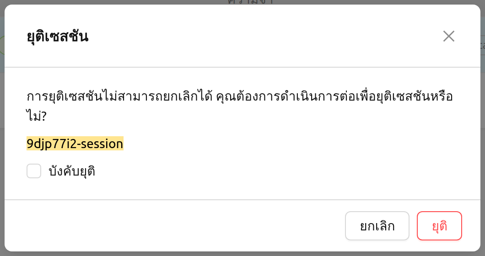
ใช้ บังคับยุติ เฉพาะเมื่อเซสชันค้างและสถานะไม่เปลี่ยนแปลงเป็นระยะเวลานานเกินไปเท่านั้น การบังคับยุติจะไม่ลบคอนเทนเนอร์จริงบนเอเจนต์ ดังนั้นอาจต้องทำความสะอาดด้วยตนเองในภายหลัง
ในขณะนี้ การคลิกชื่อเซสชันบนหน้าเซสชันของผู้ดูแลโปรเจกต์ยังไม่เปิดแผงรายละเอียดเซสชัน สำหรับข้อมูลพื้นฐานเกี่ยวกับเซสชันการคำนวณและมุมมองรายละเอียด ดูที่บทหน้าเซสชัน
การปรับใช้#
หน้า การปรับใช้ แสดงการปรับใช้โมเดลที่โปรเจกต์ที่เลือกอยู่ในปัจจุบันเป็นเจ้าของ ใช้หน้านี้เพื่อดูแลปลายทางการอนุมาน แก้ไขการตั้งค่าการปรับใช้ หรือลบการปรับใช้ที่ไม่ใช้งานแล้ว
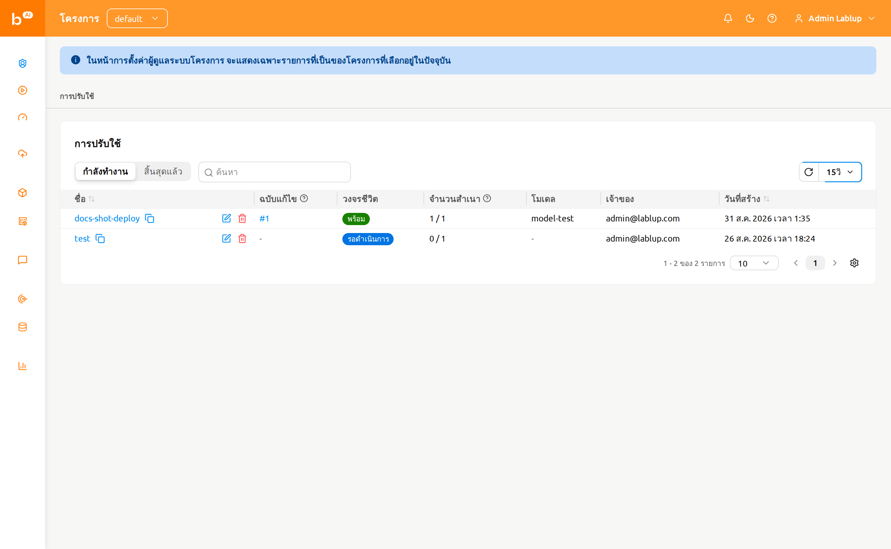
หน้านี้มีตัวควบคุมต่อไปนี้:
- ตัวควบคุมแบบแบ่งส่วน กำลังทำงาน / สิ้นสุดแล้ว: สลับระหว่างการปรับใช้ที่กำลังทำงานในปัจจุบันและการปรับใช้ที่สิ้นสุดแล้ว
- ตัวกรองคุณสมบัติ: กรองรายการตามชื่อ, แท็ก, URL ปลายทาง หรือการเปิดเป็นสาธารณะ
ตารางแสดงคอลัมน์ชื่อ, รีวิชัน, วงจรชีวิต, เรพลิกา, โมเดล, เจ้าของ และวันที่สร้างของการปรับใช้ พร้อมด้วยโดเมน, โปรเจกต์ และกลุ่มทรัพยากรของการปรับใช้ตามความเหมาะสม
คอลัมน์ รีวิชัน แสดงรีวิชันปัจจุบันของการปรับใช้เป็นลิงก์ #N ที่คลิกได้ คลิกที่ลิงก์นี้เพื่อเปิดแผงที่แสดงรายละเอียดของรีวิชันปัจจุบัน
การดำเนินการของการปรับใช้#
การดำเนินการต่อไปนี้พร้อมใช้งานในแต่ละแถวการปรับใช้:
- คลิกชื่อการปรับใช้เพื่อไปยังหน้ารายละเอียดการปรับใช้ภายในขอบเขตของผู้ดูแลโปรเจกต์
- คลิกหมายเลขรีวิชัน (
#N) เพื่อเปิดแผงรายละเอียดของรีวิชันปัจจุบัน - คลิกไอคอนดินสอเพื่อแก้ไขการกำหนดค่าของการปรับใช้ในโมดอลการตั้งค่า
- คลิกไอคอนถังขยะเพื่อลบการปรับใช้ โมดอลยืนยันต้องการให้คุณพิมพ์ชื่อการปรับใช้ก่อนจึงจะดำเนินการลบ
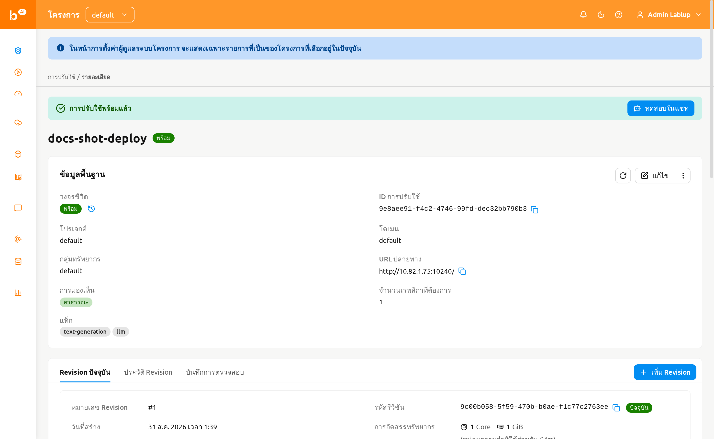
สำหรับรายละเอียดเกี่ยวกับรีวิชัน, เรพลิกา และการกำหนดเส้นทางทราฟฟิกของการปรับใช้ ดูที่บทการปรับใช้